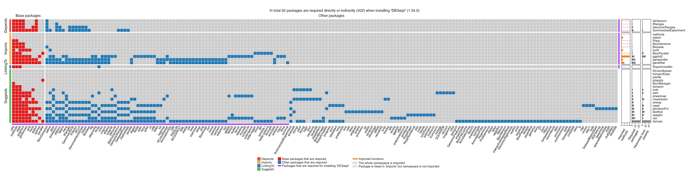
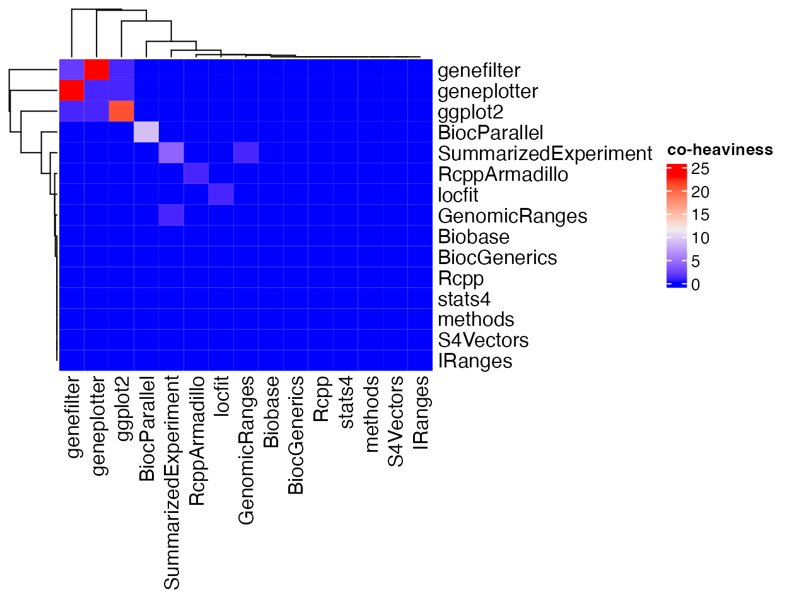

The heaviness measures the number of additional dependency packages that a parent package uniquely imports, which are the dependency packages not imported by any of the other parent packages. However, there are scenarios when multiple parents import similar sets of dependencies, which results in heaviness for individual parent being very small.
We take the DESeq2 package as an example. First we generate the dependency heatmap.
plot(x)
You can drag the plot into a new tab if it is too small to read.
# or create the plot in an HTML page
# dependency_report(x)As can be observed from the heatmap, DESeq2’s two parents geneplotter and genefilter (the last two rows in “Imports” category in the heatmap) import 51 and 53 dependency packages, among them 50 packages are the same. Due to the high overlap, the heaviness of geneplotter and genefilter on DESeq2 are only 1 and 2 respectively. However, if taking the two parents together, i.e., by moving both parents to “Suggests” of DESeq2, 23 dependency packages can be reduced.
Here we define the co-heaviness that measures the number of additional dependency packages brought by two parent packages. Denote a package as P and its two strong parent packages as A and B, i.e., parent packages in “Depends”, “Imports” and “LinkingTo”, denote \(S_A\) as the set of reduced dependency packages when only moving A to “Suggests” of P, denote \(S_B\) as the set of reduced dependency packages when only moving B to “Suggests” of P, and denote \(S_{AB}\) as the set of reduced dependency packages when moving A and B together to “Suggests” of P, the co-heaviness of A, B on P is calculatd as
\[ \left | S_{AB} \setminus \cup (S_A, S_B) \right | \]
which is the number of reduced package only caused by co-action of A and B. Symbol \(A \setminus B\) is the set of elements in A not in B and \(|A|\) is the number of elements in set A.
Denote \(h_A\) as the heaviness of A (as a strong parent) on P, \(h_B\) as the heaviness of B (as a strong parent) on P, and \(h_{AB}\) as the co-heaviess of A/B on P, the number of reduced strong dependencies by moving both A and B to P’s “Suggests” is:
\[ h_A + h_B + h_{AB} \]
pkgndep provides a function co_heaviness() that calculates co-heaviness of two parent packages. It returns a co-heaviness matrix. Please note it only returns the matrix for strong parents.
m = co_heaviness(x)
m## S4Vectors IRanges GenomicRanges SummarizedExperiment
## S4Vectors 0 0 0 0
## IRanges 0 0 0 0
## GenomicRanges 0 0 0 1
## SummarizedExperiment 0 0 1 4
## methods 0 0 0 0
## stats4 0 0 0 0
## Rcpp 0 0 0 0
## BiocGenerics 0 0 0 0
## Biobase 0 0 0 0
## locfit 0 0 0 0
## BiocParallel 0 0 0 0
## ggplot2 0 0 0 0
## geneplotter 0 0 0 0
## genefilter 0 0 0 0
## RcppArmadillo 0 0 0 0
## methods stats4 Rcpp BiocGenerics Biobase locfit
## S4Vectors 0 0 0 0 0 0
## IRanges 0 0 0 0 0 0
## GenomicRanges 0 0 0 0 0 0
## SummarizedExperiment 0 0 0 0 0 0
## methods 0 0 0 0 0 0
## stats4 0 0 0 0 0 0
## Rcpp 0 0 0 0 0 0
## BiocGenerics 0 0 0 0 0 0
## Biobase 0 0 0 0 0 0
## locfit 0 0 0 0 0 1
## BiocParallel 0 0 0 0 0 0
## ggplot2 0 0 0 0 0 0
## geneplotter 0 0 0 0 0 0
## genefilter 0 0 0 0 0 0
## RcppArmadillo 0 0 0 0 0 0
## BiocParallel ggplot2 geneplotter genefilter RcppArmadillo
## S4Vectors 0 0 0 0 0
## IRanges 0 0 0 0 0
## GenomicRanges 0 0 0 0 0
## SummarizedExperiment 0 0 0 0 0
## methods 0 0 0 0 0
## stats4 0 0 0 0 0
## Rcpp 0 0 0 0 0
## BiocGenerics 0 0 0 0 0
## Biobase 0 0 0 0 0
## locfit 0 0 0 0 0
## BiocParallel 8 0 0 0 0
## ggplot2 0 21 1 1 0
## geneplotter 0 1 1 23 0
## genefilter 0 1 23 2 0
## RcppArmadillo 0 0 0 0 1
## attr(,"max")
## [1] 23
## attr(,"max_pair")
## [1] "genefilter" "geneplotter"The co-heaviness matrix can be visualized as a heatmap.
library(ComplexHeatmap)
Heatmap(m, name = "co-heaviness")
There are two major reasons for the high co-heaviness from two parent packages. 1. Parent A also depends on package B, thus all the dependency packages brought by package B will also be included in the dependency packages from package A. E.g., package ffpe’s two parents lumi and methylumi where lumi also depends on methylumi and most of the heaviness comes from methylummi. 2. Although A and B do not depend on each other, they have a common upstream package, which brings the same dependencies to A and B. Such as the example of DESeq2, its two parent packages geneplotter and genefilter have a common upstream pacakge annotate that contribute many dependencies to both package.
Alternatively, the co-heaviness can also be defined as a relative measure, the Jaccard coeffcient. Note \(S_{AB} \setminus \cup (S_A, S_B)\) is actually the set of dependencies that are imported simultaneously by and only by two parent packages A and B. Thus the Jaccard coeffcient is calculated as:
\[ \frac{ \left | S_{AB} \setminus \cup (S_A, S_B) \right | }{ \left | S_{AB} \right | } \]
Or using the denotation of heaviness defined before, the Jaccard coeffcient can also be written as:
\[ \frac{h_{AB}}{h_A + h_B + h_{AB}} \]
The Jaccard coeffcient can be calculated by setting argument jaccard = TRUE:
co_heaviness(x, jaccard = TRUE)## S4Vectors IRanges GenomicRanges SummarizedExperiment
## S4Vectors 0 0 0.0 0.0
## IRanges 0 0 0.0 0.0
## GenomicRanges 0 0 0.0 0.2
## SummarizedExperiment 0 0 0.2 1.0
## methods 0 0 0.0 0.0
## stats4 0 0 0.0 0.0
## Rcpp 0 0 0.0 0.0
## BiocGenerics 0 0 0.0 0.0
## Biobase 0 0 0.0 0.0
## locfit 0 0 0.0 0.0
## BiocParallel 0 0 0.0 0.0
## ggplot2 0 0 0.0 0.0
## geneplotter 0 0 0.0 0.0
## genefilter 0 0 0.0 0.0
## RcppArmadillo 0 0 0.0 0.0
## methods stats4 Rcpp BiocGenerics Biobase locfit
## S4Vectors 0 0 0 0 0 0
## IRanges 0 0 0 0 0 0
## GenomicRanges 0 0 0 0 0 0
## SummarizedExperiment 0 0 0 0 0 0
## methods 0 0 0 0 0 0
## stats4 0 0 0 0 0 0
## Rcpp 0 0 0 0 0 0
## BiocGenerics 0 0 0 0 0 0
## Biobase 0 0 0 0 0 0
## locfit 0 0 0 0 0 1
## BiocParallel 0 0 0 0 0 0
## ggplot2 0 0 0 0 0 0
## geneplotter 0 0 0 0 0 0
## genefilter 0 0 0 0 0 0
## RcppArmadillo 0 0 0 0 0 0
## BiocParallel ggplot2 geneplotter genefilter
## S4Vectors 0 0.00000000 0.00000000 0.00000000
## IRanges 0 0.00000000 0.00000000 0.00000000
## GenomicRanges 0 0.00000000 0.00000000 0.00000000
## SummarizedExperiment 0 0.00000000 0.00000000 0.00000000
## methods 0 0.00000000 0.00000000 0.00000000
## stats4 0 0.00000000 0.00000000 0.00000000
## Rcpp 0 0.00000000 0.00000000 0.00000000
## BiocGenerics 0 0.00000000 0.00000000 0.00000000
## Biobase 0 0.00000000 0.00000000 0.00000000
## locfit 0 0.00000000 0.00000000 0.00000000
## BiocParallel 1 0.00000000 0.00000000 0.00000000
## ggplot2 0 1.00000000 0.04347826 0.04166667
## geneplotter 0 0.04347826 1.00000000 0.88461538
## genefilter 0 0.04166667 0.88461538 1.00000000
## RcppArmadillo 0 0.00000000 0.00000000 0.00000000
## RcppArmadillo
## S4Vectors 0
## IRanges 0
## GenomicRanges 0
## SummarizedExperiment 0
## methods 0
## stats4 0
## Rcpp 0
## BiocGenerics 0
## Biobase 0
## locfit 0
## BiocParallel 0
## ggplot2 0
## geneplotter 0
## genefilter 0
## RcppArmadillo 1
## attr(,"max")
## [1] 0.8846154
## attr(,"max_pair")
## [1] "genefilter" "geneplotter"But users need to be careful that a small value of \(|S_{AB}|\) may lead to a large Jaccard coeffcient value.
Finally, co-heaviness captures additional dependency packages from and only from two parents, while it does work for more parents. However, the effect of heaviness from multiple parents can always be easily observed from the dependency heatmap.